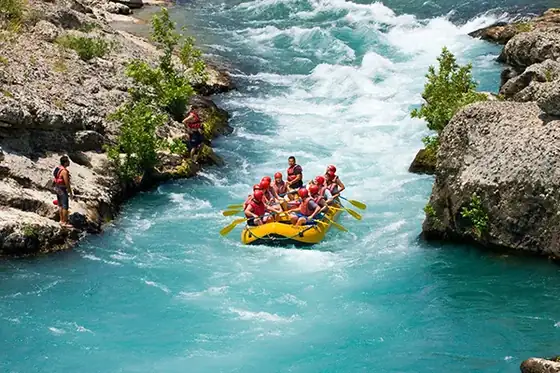
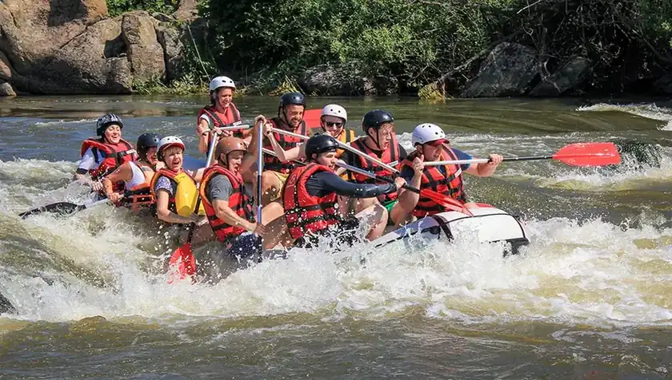
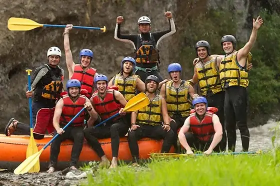
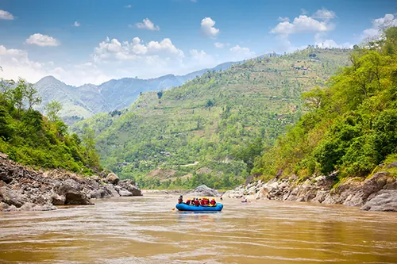
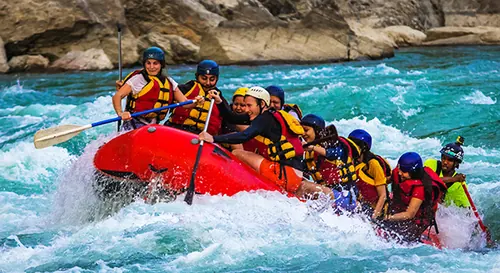
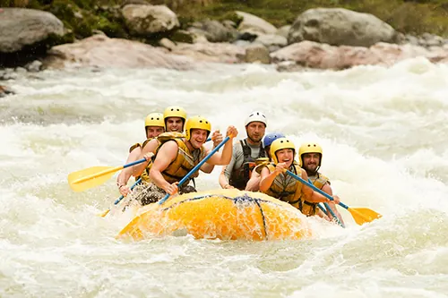

Our River Mission

Since 2008, our mission has been to deliver thrilling, inclusive, and conservation-minded river adventures. We believe time on moving water builds confidence, teamwork, and lifelong respect for wild canyons.


Since 2008, our mission has been to deliver thrilling, inclusive, and conservation-minded river adventures. We believe time on moving water builds confidence, teamwork, and lifelong respect for wild canyons.
Founded by two river guides with three salvaged rafts and a pickup truck in Salmon, Idaho, Whitewater Expeditions started with half-day community floats and youth outdoor workshops.

Over nearly two decades, our outfitter has grown into a full-service canyon expedition team running four scenic river corridors while maintaining an industry-leading safety record.


